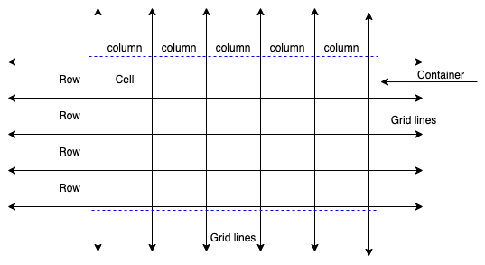
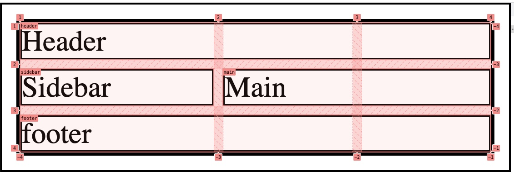

What is grid-layout?
Grid Layout is a CSS module that provides a two-dimensional
grid-based layout system. It allows developers to create complex
layouts with ease by dividing a web page into rows and columns. This
module defines a set of properties that enable developers to create
grid structures on a web page, allowing them to position and size
items in relation to each other within the grid.
Some of the key features of Grid Layout include:
Grid container: The element that contains the grid items.
Grid item: The element that is a child of the grid container and
placed within the grid.
Grid lines: The horizontal and vertical lines that make up the
grid structure. Grid tracks: The spaces between the grid lines.
Grid cells: The intersection of a grid row and a grid column.
Overall, Grid Layout provides a powerful and flexible way to create
complex layouts that can adapt to different screen sizes and content
requirements.

Container: Template columns and rows
grid-template-columns : none;
grid-template-columns : 100px 1fr;
grid-template-columns : [linename] 100px;
grid-template-columns : [linename1] 100px [linename2 linename3];
grid-template-columns : minmax ( 100px, 1fr) ;
grid-template-columns : fit-content ( 40%) ;
grid-template-columns : repeat ( 3, 200px) ;
grid-template-columns : subgrid;
grid-template-columns : masonry;
grid-template-columns : 200px repeat ( auto-fill, 100px) 300px;
grid-template-columns :
minmax ( 100px, max-content)
repeat ( auto-fill, 200px) 20%;
grid-template-columns :
[linename1] 100px [linename2]
repeat ( auto-fit, [linename3 linename4] 300px)
100px;
grid-template-columns :
[linename1 linename2] 100px
repeat ( auto-fit, [linename1] 300px) [linename3];
grid-template-columns : inherit;
grid-template-columns : initial;
grid-template-columns : revert;
grid-template-columns : revert-layer;
grid-template-columns : unset;
grid-template-rows : none;
grid-template-rows : 100px 1fr;
grid-template-rows : [linename] 100px;
grid-template-rows : [linename1] 100px [linename2 linename3];
grid-template-rows : minmax ( 100px, 1fr) ;
grid-template-rows : fit-content ( 40%) ;
grid-template-rows : repeat ( 3, 200px) ;
grid-template-rows : subgrid;
grid-template-rows : masonry;
grid-template-rows : 200px repeat ( auto-fill, 100px) 300px;
grid-template-rows :
minmax ( 100px, max-content)
repeat ( auto-fill, 200px) 20%;
grid-template-rows :
[linename1] 100px [linename2]
repeat ( auto-fit, [linename3 linename4] 300px)
100px;
grid-template-rows :
[linename1 linename2] 100px
repeat ( auto-fit, [linename1] 300px) [linename3];
grid-template-rows : inherit;
grid-template-rows : initial;
grid-template-rows : revert;
grid-template-rows : revert-layer;
grid-template-rows : unset;
Try:
grid-template-columns
grid-template-rows
View
Item1
Item2
Item3
Item4
Item5
Item6
Try example with:
grid-template-columns: repeat(3, 1fr);
grid-template-rows: 100px 200px 100px;
grid-auto-rows: 60px; // for each row fixed 60px
gird-auto-rows: minmax(60px, auto); // min height 60px, if content item > 60px, height expand
grid-template-columns: fix-content(40%);// fix-content([max-width]);
Grid template area
Define a layout:
/* html */
<div class="containter">
<header>
Header
</header>
<aside>
Sidebar
</aside>
<section class="main">
Main
</section>
<footer>
footer
</footer>
</div>
/* css */
* {
border: 1px solid black;
}
.container {
display: grid;
grid-template-areas:
'header header header'
'sidebar main main'
'footer footer footer';
column-gap: 5px;
row-gap: 5px;
}
header {
grid-area: header;
}
aside {
grid-area: sidebar;
}
section {
grid-area: main;
}
footer {
grid-area: footer;
}

Responsive with grid layout
Prepare
/* html */
<div class="container">
<header>Header</header>
<aside>Aside</aside>
<section class="article-container">
<article>Article 1</article>
<article>Article 2</article>
<article>Article 3</article>
<article>Article 4</article>
<article>Article 5</article>
<article>Article 6</article>
</section>
<footer>Footer</footer>
</div>
/* css */
* {
padding: 0px;
margin: 0px;
box-sizing: border-box;
}
header {
background-color: wheat;
height: 100px;
}
footer {
background-color: wheat;
height: 100px;
}
article {
background-color: bisque;
height: 200px;
margin-bottom: 6px;
}
aside {
background-color: antiquewhite;
}
header {
grid-area: header;
}
aside {
grid-area: sidebar;
}
footer {
grid-area: footer;
}
section {
grid-area: section;
}
.container {
display: grid;
grid-template-areas:
'header header header'
'sidebar section section'
'footer footer footer';
grid-template-columns: 200px 1fr 1fr;
row-gap: 10px;
column-gap: 10px;
}
/* responsive layout */
@media (max-width: 600px) {
.container {
grid-template-areas:
'header header header'
'sidebar sidebar sidebar'
'section section section'
'footer footer footer';
}
}
/* target: tablet(900px) show 2 article in a row, moble(600px) show 1 article in a row*/
Solutions for: tablet(900px) show 2 article in a row, moble(600px)
show 1 article in a row
/* Solution1: using @media to responsive with grid */
.article-container {
display: grid;
grid-template-columns: repeat(3, 1fr);
row-gap: 5px;
column-gap: 5px;
}
@media (max-width: 900px) {
.article-container {
display: grid;
grid-template-columns: repeat(2, 1fr);
}
}
@media (max-width: 600px) {
.article-container {
display: grid;
grid-template-columns: repeat(1, 1fr);
}
}
/* Solution 2: using grid provided properties: repeat(auto-fit, minmax(300px, 1fr);*/
.article-container {
display: grid;
grid-template-columns: repeat(auto-fit, minmax(300px, 1fr));
row-gap: 5px;
column-gap: 5px;
}
/* solution 3: flex-box */
article {
border: 1px solid black;
}
.article-container {
display: flex;
flex-wrap: wrap;
}
.article-container article {
flex-basis: 33%;
}
@media (max-width: 900px) {
.article-container article {
flex-basis: 50%;
}
}
@media (max-width: 600px) {
.article-container article {
flex-basis: 100%;
}
}